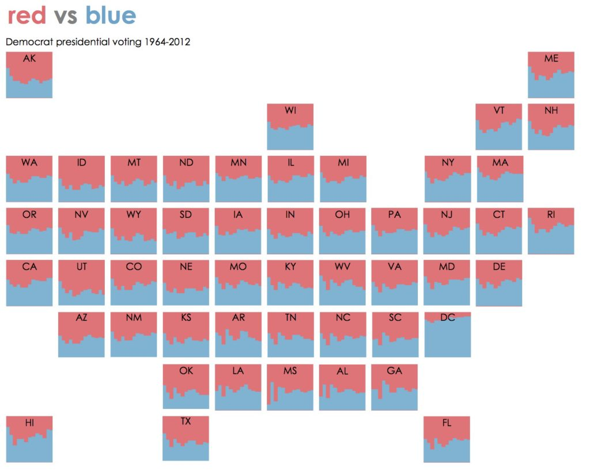

Trends in Refugee Acceptance, 2002 to 2019
In previous projects, I’ve explored how migration has unfolded across places: where migrants travel, where they go missing, and where their journeys come to a fatal end.
Next, I wanted to see how host countries have approached the migrant and refugee crisis, with a particular focus on the United States. In my mind, an effective visualization of the U.S.‘s response to an increasing number of refugees needs to present two things: how refugee acceptance has changed over time and how refugee acceptance differs across states.
An effective way to present both of these trends is with a map of small multiple line charts. For aesthetic purposes, it would also be nice to arrange these multiples in a shape that vaguely resembles the United States. (This also makes it easier for readers to find their state of interest.)
There are examples of these types of small multiple maps across the internet. The Washington Post’s overview of the electoral college was visualized in the following way:
You can also find an overview of why they work, and some additional examples, on the PolicyViz blog:

Making it in R
The process of creating a small multiple tile grid map is relatively easy in R (like most things done in R). It is considerably more difficult in D3.js; if you’re interested in that type of thing, you can take a look at this code for inspiration.
Step 1: Build the basic line chart
The first step (after obnoxious data merging and cleaning) is getting a feel for the basic line chart. To do so, we can visualize the macro-level trends of refugee acceptance across all states combined.
data %>%
group_by(region_name_3) %>%
summarise(textbox37 = sum(textbox37)) %>%
ggplot(aes(x = region_name_3, y = textbox37)) +
geom_line() +
labs(title = "Refugee Acceptance on the Decline",
subtitle = "Number of refugees accepted annually, 2002 - 2019",
x = element_blank(),
y = element_blank()) +
scale_y_continuous(labels = scales::comma_format()) +
scale_x_continuous(breaks = c(2002, 2019))
Now we have the answer to our first question: how has refugee acceptance changed over time? The answer: pretty drastically. The US accepted nearly 100,000 refugees in 2016; 2 years later, that number was barely over 20,000.
Step 2: Make small multiples
Next, we make 50 of these lines: one for each US state. We do so using Ryan Hafen’s geofacet
package.
It’s as simple as adding one line of code to our previous plot:
facet_geo(~ state)
This makes a plot that looks like this:
It’s alright, but not perfect! There are a few improvements we can definitely make.
For one, the axis labels overlap. We already know the range of years is between 2002 and 2019 (its in our subtitle!). So we can remove our x axis labels.
theme(
axis.text.x = element_blank(),
axis.ticks.x = element_blank()
)
Second, The axis lines (on both axes) seem unnecessary and (the x-axis specifically) can sometimes conceal trends for those states with lower values. Let’s remove those too!
theme(
axis.line.x = element_blank(),
axis.line.y = element_blank()
)
Finally, I don’t like huge gray boxes around my axis labels. Could we make those transparent?
theme(
strip.background = element_rect(color = "white")
)
Add it all together (and tweak the font size), and we get this:
data %>%
group_by(region_name_3, state) %>%
summarise(textbox37 = sum(textbox37)) %>%
ggplot(aes(x = region_name_3, y = textbox37)) +
geom_line(color = "black") +
scale_x_continuous(breaks = c(2002,2019)) +
scale_y_continuous(breaks = c(0,12000)) +
facet_geo(~ state, grid = "us_state_grid1") +
labs(title = "Refugee Acceptance on the Decline",
subtitle = "Number of refugees accepted annually, 2002 - 2019",
x = element_blank(),
y = element_blank()) +
theme(
axis.text.x = element_blank(),
axis.ticks.x = element_blank(),
axis.line.x = element_blank(),
axis.line.y = element_blank(),
plot.title = element_text(size = 24),
plot.subtitle = element_text(size = 18),
strip.background = element_rect(color = "white")
)
Pretty good! Much better. But we can add some elements to take our visualization to the next level.
Because our data spans nearly 20 years (2002 to 2019), we can overlay our small multiples with other variables of interest, such as who was President during a given period.
We do so using geom_rect:
geom_rect(mapping=aes(xmin=2009, xmax=2017, ymin=0, ymax=12000), fill = "#ADD8E6", alpha = .05) +
geom_rect(mapping=aes(xmin=2017, xmax=2019, ymin=0, ymax=12000), fill = "#FF9999", alpha = .05) +
The first line of code creates a blue box which spans 2009 to 2017 (Obama’s tenure). The second line creates a red box for Trump’s presidency (so far).
Bringing it all together, the code and output look like this:
data %>%
group_by(region_name_3, state) %>%
summarise(textbox37 = sum(textbox37)) %>%
ggplot(aes(x = region_name_3, y = textbox37)) +
geom_line(color = "black") +
geom_rect(mapping=aes(xmin=2009, xmax=2017, ymin=0, ymax=12000), fill = "#ADD8E6", alpha = .05) +
geom_rect(mapping=aes(xmin=2017, xmax=2019, ymin=0, ymax=12000), fill = "#FF9999", alpha = .05) +
scale_x_continuous(breaks = c(2002,2019)) +
scale_y_continuous(breaks = c(0,12000)) +
facet_geo(~ state, grid = "us_state_grid1") +
labs(title = "Refugee Acceptance on the Decline",
subtitle = "Number of refugees accepted annually, 2002 - 2019",
x = element_blank(),
y = element_blank()) +
theme(
axis.text.x = element_blank(),
axis.ticks.x = element_blank(),
axis.line.x = element_blank(),
axis.line.y = element_blank(),
plot.title = element_text(size = 24),
plot.subtitle = element_text(size = 18),
strip.background = element_rect(color = "white")
)
I brought that plot to Illustrator and made it a lot prettier. Here’s the final version:
What do we notice? A few key states (Texas, California, Florida, and Michigan) make up the vast majority of refugee acceptance, while other accept almost no refugees. Nearly every state has reduced their refugee acceptance since 2017, but the bulk of this decline has come from these larger states.
While you’re here, take a look at my project Mapping Missing Migrants.
Connor Rothschild
Undergraduate at Rice University
I’m a senior at Rice University interested in public policy, data science and their intersection. I’m most passionate about translating complex data into informative and entertaining visualizations.